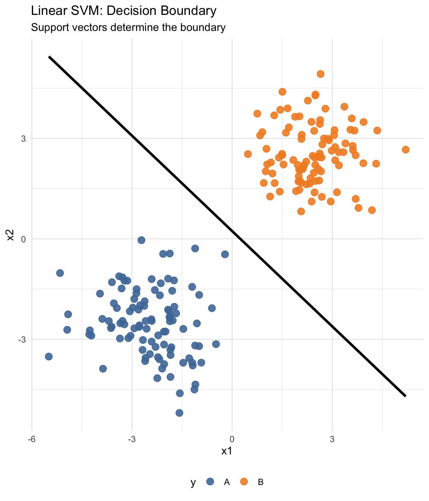

Bagging, boosting, and stacking
Introduction
- Why do we need multiple models?
- Review of KNN, SVM, and Random Forest
- Bagging
- Boosting
- Stacking
Methods
| Family | Method Examples | Strength |
|---|---|---|
| Linear | Regularized regression: LASSO, Ridge, Elastic Net, | Interpretability, fast, works well with high-dimensional sparse data |
| Tree-Based | Decision Trees, Random Forest, XGBoost | Non-linear modeling, handles mixed data types, robust to outliers |
| Distance-Based | KNN, Radius Neighbors, Mahalanobis classifier | Simple, non-parametric, no training phase |
| Margin-Based | Support Vector Machines (SVM), Max-Margin Markov Networks, Large Margin Nearest Neighbor (LMNN) | Effective in high dimensions, especially with kernels |
| Neural Nets | CNN, RNN, Autoencoders | Highly flexible, works with unstructured data (images, sequences) |
üí¨
- Does it make sense to combine different modeling approaches?
- Why might we use multiple models instead of relying on a single one?
- What are the potential benefits or trade-offs?
Some answers:
- Combining diverse models can capture different patterns and reduce error.
- Multiple models can improve accuracy, reduce overfitting, and balance out individual model weaknesses.
- There are trade-offs, such as increased complexity, lower interpretability, and higher computational cost.
Methods
KNN, SVM and Random Forest
KNN
example of a classification algorithm


KNN
example of a classification algorithm


KNN
K-Nearest Neighbors (KNN)
- Family: Distance-based, non-parametric classification or regression
- Idea: To classify a new observation, find the k closest points in the training data and let them “vote” on the outcome.
How it works
- Choose a value of k (e.g., 3 or 5)
- Compute distance (e.g., Euclidean) from the new point to all training points
- Select the k nearest neighbors
- Predict:
- Classification: majority class among neighbors
- Regression: average of neighbors’ values
KNN
üîë Key points:
- No training phase: KNN just stores the data
- Sensitive to scaling: Features must be normalized
- Choice of distance metric matters: Euclidean, Manhattan, or Mahalanobis
✅ Pros:
- Simple and intuitive
- Works well with local structure
❌ Cons:
- Slow on large datasets
- Sensitive to irrelevant features
- Doesn’t work well in high dimensions (curse of dimensionality)
Methods
KNN, SVM and Random Forest
SVM
Support Vector Machine classifier
SVM
- based on fitting a linear class boundary between 2 classes in explanatory variable space
- points on one side are predicted to belong to one class, points on the other side to another class
- classes (\(g_i\)) are coded as -1 and 1
- the boundary is defined by a hyperplane \(\mathbf{w}^T \mathbf{x} + b = 0\), where \(\mathbf{x}\) is the weight vector and \(b\) is a scalar
- and in 2D, the hyperplane is a line
SVM
Support Vector Machine classifier
Optimal separating hyperplane:
- Maximizes the margin between classes
- Margin = distance between the hyperplane and the closest points from each class
- Done via solving a constrained optimization problem
- The solution depends only on a subset of training data, i.e. the support vectors
SVM
Support Vector Machine classifier
Optimal separating hyperplane:
- For non-separable data, introduces slack variables and a penalty parameter \(C\) to allow misclassifications (soft margin)
- The cost parameter \(C\) controls the trade-off between margin width and classification errors
- Lower \(C\) values tolerate more violations.
SVM
Support Vector Machine classifier
Optimal separating hyperplane:
- In non-linear cases, uses the kernel trick to find a linear boundary in transformed feature space
- Data are projected into a higher-dimensional space, where a linear boundary is fitted, which translates to a non-linear boundary in the original space
- The “trick” is using a kernel function which computes the inner product of the transformed data points in the new space without explicitly calculating the transformation itself or the coordinates in the high-dimensional space, often making it computationally cheaper.
SVM
üîë Key points:
- Finds the optimal separating hyperplane with maximum margin
- Only support vectors influence the decision boundary
- Can model non-linear patterns using the kernel trick
✅ Pros:
- Effective in high-dimensional spaces
- Flexible with different kernel functions (e.g., linear, RBF)
- Often generalizes well with proper tuning
❌ Cons:
- Requires careful feature scaling
- Can be slow on large datasets
- Less interpretable than simpler models like KNN
Methods
KNN, SVM and Random Forest
Decision Tree üå≥
- Splits data based on feature thresholds to form a tree of decisions
- Each leaf node assigns a predicted class
- At each node, the algorithm considers all possible splits for all features
- for classification: uses e.g. Gini impurity to measure split quality
- for regression: uses variance reduction or mean squared error
- The best split is the one that results in the greatest “purity” in the child nodes
- Splitting continues recursively until stopping criteria are met (e.g., max depth, min node size)
Iris data set preview:
Sepal.Length Sepal.Width Petal.Length Petal.Width Species
1 5.1 3.5 1.4 0.2 setosa
2 4.9 3.0 1.4 0.2 setosa
3 4.7 3.2 1.3 0.2 setosa
4 4.6 3.1 1.5 0.2 setosa
5 5.0 3.6 1.4 0.2 setosa
6 5.4 3.9 1.7 0.4 setosaDecision Tree üå≥
Controlling tree growth
maxdepth: Maximum Tree Depth
- Limits how deep the tree can grow (number of split levels)
- Helps prevent overfitting on small patterns
- Lower values = simpler, more general trees
minsplit: Minimum Split Size
- Minimum number of observations required to split a node
- Prevents the tree from splitting on tiny or noisy data subsets
- Higher values = fewer splits, more conservative tree
The parameters balance tree complexity and generalization
Random Forest üå≥ üå≥ üå≥ üå≥ üå≥
Ensemble of decision trees:
- Each tree is trained on a bootstrap sample of the data
- At each split, only a random subset of features is considered
Why this works:
- Trees become de-correlated
- Averaging their predictions reduces variance
- More stable and accurate than a single decision tree
Random Forest üå≥ üå≥ üå≥ üå≥ üå≥
Key Parameters:
ntree: Number of trees (more = better, up to a point)
mtry: Number of features to consider at each split
nodesize: Minimum size of terminal nodes
Variable importance
- Since each tree sees a bootstrap sample,
- and at each split only a random subset of features is considered (fair competition)
- we can estimate how important each feature is.
- Variable importance is calculated as:
- total decrease in Gini or entropy from splits using a feature, summed across all trees
- or the drop in accuracy when a feature is randomly permuted (permutation importance)
Random Forest üå≥ üå≥ üå≥ üå≥ üå≥
üîë Key points:
- Ensemble of decision trees trained on bootstrap samples
- Each split considers a random subset of features
- Improves stability and accuracy by averaging predictions across trees
✅ Pros:
- Robust to overfitting and noise
- Handles high-dimensional and mixed-type data
- No need for feature scaling
- Provides built-in variable importance measures
❌ Cons:
- Less interpretable than a single decision tree
Bagging, boosting, and stacking
Bagging
flowchart LR D[Original Data] D --> B1[Bootstrap Sample 1] D --> B2[Bootstrap Sample 2] D --> B3[Bootstrap Sample 3] B1 --> M1[Model 1] B2 --> M2[Model 2] B3 --> M3[Model 3] M1 --> A[Aggregate Output] M2 --> A M3 --> A
Boosting
flowchart LR D[Original Data] D --> M1[Model 1] M1 --> R1[Residuals] R1 --> M2[Model 2] M2 --> R2[Residuals] R2 --> M3[Model 3] M3 --> A[Final Output]
XGBoost
Stacking
flowchart LR D[Training Data] D --> M1[Model 1, e.g. KNN] D --> M2[Model 2, e.g. SVM] D --> M3[Model 3, e.g. RF] M1 --> P1[Pred 1] M2 --> P2[Pred 2] M3 --> P3[Pred 3] P1 --> ML[Meta-Learner] P2 --> ML P3 --> ML ML --> Final[Final Prediction]
Beyond bagging, boosting, and stacking
More of each family
Summary
Lab
Thank you
Questions?